Why and when should you pool?
Analyzing Pooling in Recurrent Architectures
Published:
TL;DR:
- Pooling (and attention) help improve learning ability and positional invariance of BiLSTMs.
- Pooling helps improve sample efficiency (low-resource settings) and is particularly beneficial when important words lie away from the end of the sentence.
- Our proposed pooling technique, max-attention (MaxAtt), helps improve upon past approaches on standard accuracy metrics, and is more robust to distribution shift.
Motivation
Various pooling techniques, like mean-pooling, max-pooling, and attention*, have shown to improve the performance of RNNs on text classification tasks. Despite widespread adoption, precisely why and when pooling benefits the models is largely unexamined.
In this work, we identify two key factors that explain the performance benefits of pooling techniques: learnability, and positional invariance. We examine three commonly used pooling techniques (mean-pooling, max-pooling, and attention), and propose max-attention, a novel variant that effectively captures interactions among predictive tokens in a sentence.
* Attention aggregates representations via a weighted sum, thus we consider it under the umbrella of pooling in this work.
Overview of Pooling and Attention
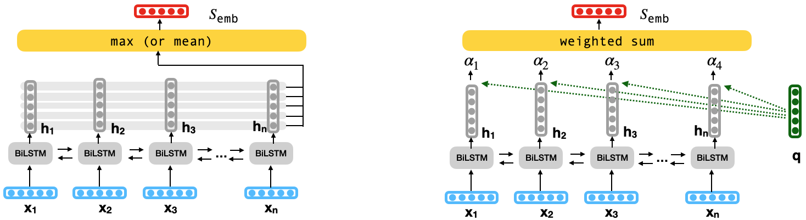
Let $s = {x_1, x_2, \ldots, x_n}$ be an input sentence, where $x_t$ is a representation of the input word at position $t$. A recurrent neural network such as an LSTM produces a hidden state $h_t$, and a cell state $c_t$ for each input word $x_t$, where $h_{t}, c_{t} = \phi(h_{t-1}, c_{t-1}, x_{t})$.
Standard BiLSTMs concatenate the first hidden state of the backward LSTM, and the last hidden state of the forward LSTM for the final sentence representation: $s_{\text{emb}} = [\overrightarrow{h_n}, \overleftarrow{h_1}]$.
Pooling produces a sentence embedding that aggregates all hidden states at every word position $t$ (row-wise) using $max$ or $mean$ operation (Figure to the left). Alternately, attention (Luong attention) aggregates a weighted sum of each hidden state by first multiplying them by a query vector to calculate their importance (Figure to the right). In text classification tasks, a fixed query vector or a global query (for the entire corpus) is used to compute the importance value of a token in any sentence.
The sentence embedding ($s_{\text{emb}}$) is finally fed to a downstream text classifier.
Max-Attention
We introduce a novel pooling variant called max-attention (MaxAtt) to capture inter-word dependencies. It uses the max-pooled hidden representation as the query vector for attention. This helps to generate a sentence-specific local query vector to calculate attention weights.
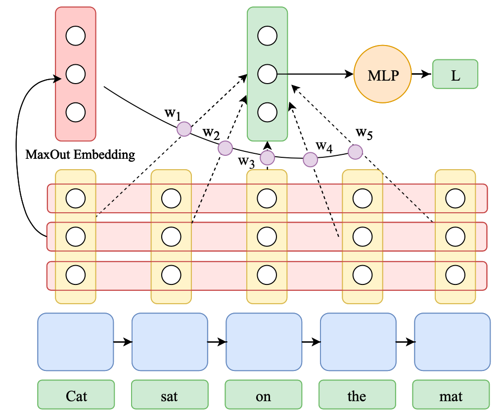
Formally:
\[\begin{aligned} q^{i} &= \max_{t \in (1,n)}(h_{t}^{i}); &\hat{h_{t}} &= h_{t}/\|h_{t}\|\\ \alpha_{t} &= \frac{\exp(\hat{h_{t}}^{\top}q)}{\sum_{j=1}^n\exp(\hat{h_{j}}^{\top}q)}; &s_{\text{emb}} &= \sum_{t=1}^n \alpha_{t}h_{t} \end{aligned}\]Note that the learnable query vector in Luong attention is the same for the entire corpus, whereas in max-attention each sentence has a unique locally-informed query, which we hypothesize helps capture inter-word dependencies better. Previous literature extensively uses max-pooling to capture the prominent tokens (or objects) in a sentence (or image). Hence, using max-pooled representation as a query for attention allows for a second round of aggregation among important hidden representations.
Now we present comparisons between pooled and non-pooled BiLSTMs across various axes: their Gradient Propagation and Positional Biases.
Gradient Propagation
~ How does gradient propagation across word positions vary between pooled and non-pooled BiLSTMs? Do gradients vanish for BiLSTMs? ~
In order to quantify the extent to which the gradients vanish across different word positions, we compute the gradient of the loss function w.r.t the hidden state at every word position 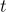, and study their norm. This is represented by the 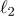 norm  .
.
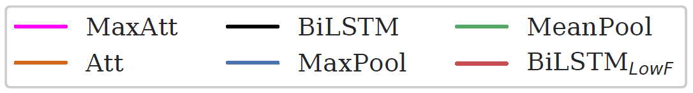

The gradient norm $\ell_2$ norm $\lVert\frac{\partial L}{\partial h_{t}}\rVert$ across different word positions after training for 500 examples. BiLSTM_LowF suffers from extreme vanishing gradient, with the gradient norm in the middle nearly $10^{-10}$ times that at the ends.
The plot suggests that specific initialization of the gates with best practices (such as setting the bias of forget-gate to a high value) helps to reduce the extent of the issue, but the problem still persists. In contrast, none of the pooling techniques face this issue, resulting in an almost straight line.
~ How does gradient vanishing change as we train our models for more epochs? ~
We define Vanishing Ratio– Given by $\lVert\frac{\partial L}{\partial h_{\text{mid}}}\rVert$ $/$ $\lVert\frac{\partial L}{\partial h_{\text{end}}}\rVert$. It is a measure to quantify the extent of vanishing gradient. Higher values indicate severe vanishing as the gradients reaching the middle are lower than the gradients at the end.
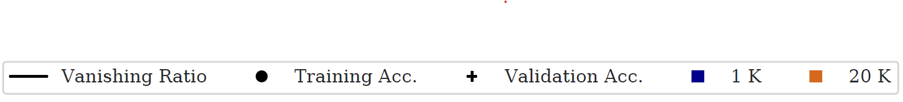
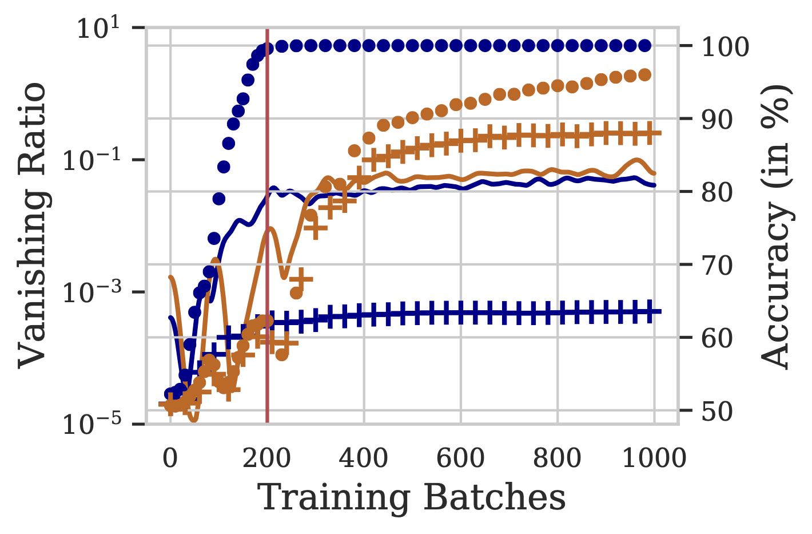 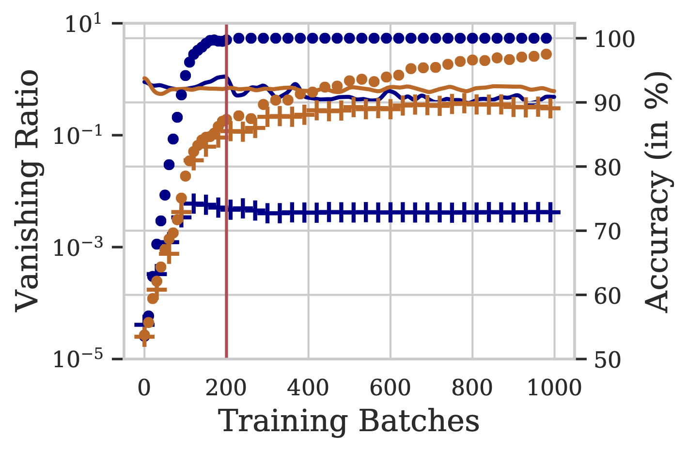
The figure above presents vanishing ratios over training steps for BiLSTM and MaxAtt, using 1K, 20K unique training examples from the IMDB dataset. The respective training and validation accuracies are also depicted. We note that the BiLSTM model overfits on the training data, even before the gates can learn to allow the gradients to pass through (and mitigate the vanishing gradients problem). Thus, the model prematurely memorizes the training data solely based on the starting and ending few words.
The vanishing ratio is high for BiLSTM, especially in low-data settings. This results in a 12-14% lower test accuracy compared to other pooling techniques, in the 1K setting. We conclude that the phenomenon of vanishing gradients results in weaker performance of BiLSTM, especially in low training data regimes.
Key Take-aways:
- Vanishing Gradient is a significant issue for BiLSTMs in the initial few epochs of training.
- On training for more examples, gradient vanishing reduces in BiLSTMs.
- In low-resource setting, this phenomenon leads BiLSTMs to overfit to the training data even before it learnt to propagate gradients to distant states.
- Pooling based methods naturally prevent gradient vanishing by allowing direct propagation of signal to distant hidden states.
Positional Biases
The gradient propagation in BiLSTMs suggests that standard LSTMs should be biased towards the end tokens, as the overall contribution of distant hidden states is extremely low in the gradient of the loss. This implies that the weights of various parameters in an LSTM cell (all cells of an LSTM have tied weights) are barely influenced by the middle words of the sentence.
We now verify this hypothesis by evaluating positional biases of BiLSTMs with different pooling techniques.
Evaluating Natural Positional Biases
~ Can naturally trained recurrent models skip over unimportant words in the begining or the end of the sentence? ~
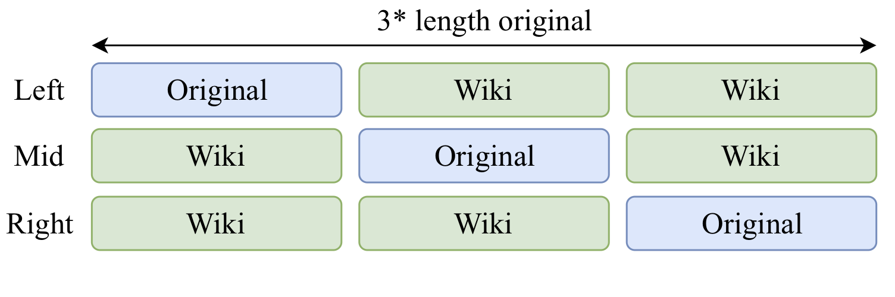
- We append varying amounts of random Wikipedia sentences to the original data at test time for different models trained over the standard data.
- As the percentage of Wikipedia words added to both ends ↑, the model accuracy ↓ significantly for BiLSTM & mean-pool (Figure to the right below). This suggests that these models are unable to skip over the words at the ends.
- Adding Wikipedia words to just one end (Figure to the left below) does not effect BiLSTM accuracy significantly. This suggests that the BiLSTM is able to draw relevant signal from the other end and make useful predictions.
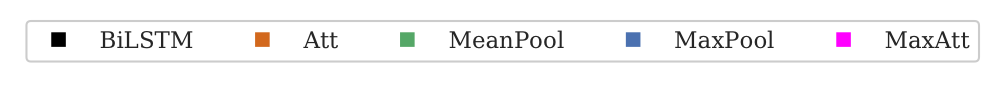
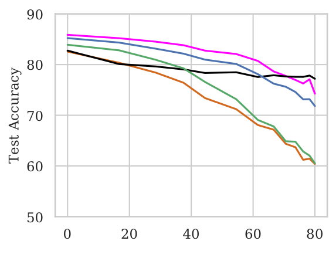 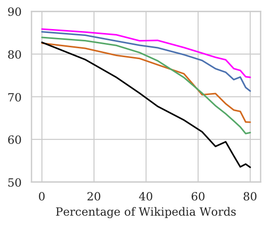
(a) Wikipedia words added to the right; (b) Wikipedia words added to both ends
Training to Skip Unimportant Words
~ How well can different models be trained to skip unrelated words? ~
- We modify the training set to contain input from the modified distribution : Wiki (Left), Wiki (Mid), Wiki (Right).
- BiLSTM accuracy in the Mid setting = majority class baseline in low-resource datasets.

Fine-grained Positional Biases</b></p>
~ How does the position of a word impact its importance in the final prediction by a model? ~
The NWI Metric
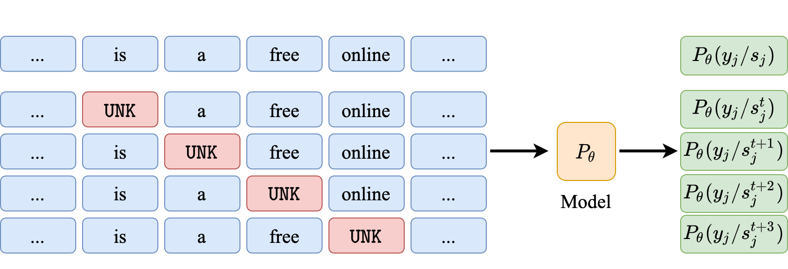
- NWI metric to calculate per-position importance of words.
- For pooled architectures, we observe No bias w.r.t. word position. In case of the Wiki (Mid) setting where only the middle tokens contain original input, the pooled models are able to attribute significantly higher importance to the middle tokens.
- For BiLSTMs there is a huge bias towards the end words even when the original sentence is in the middle.
- Even when sentence length is small, BiLSTMs show bias towards end tokens. Though, they are able to attain non-trivial test accuracies.
Standard
Left
Mid
Short + Mid
Conclusion
Through detailed analysis we identify why and when pooling representationsare beneficial in RNNs. We attribute the performance benefits of pooling techniques to their learning ability (pooling mitigates the problem of vanishing gradients), and positional invariance (pooling eliminates positional biases).
Our findings suggest that pooling offers large gains when the training examples are few and long, and salient words lie towards the middle of the sequence.
Lastly, we introduce a novel pooling technique called max-attention (MaxAtt), which consistently outperforms other pooling variants, and is robust to addition of unimportant tokens in the text. Most of our insights are derived for sequence classification tasks using RNNs. While the analysis techniques and the pooling variant proposed in the work are general, it remains a part of the future work to evaluate their impact on other tasks and architectures.
Authors


How do I cite this work?
If you find this work useful, please cite our paper:
@inproceedings{maini2020pool,
title = "Why and when should you pool? Analyzing Pooling in Recurrent Architectures",
author = "Maini, Pratyush and Kolluru, Keshav and Pruthi, Danish and {Mausam}",
booktitle = "Findings of the Association for Computational Linguistics: EMNLP 2020",
year = "2020",
address = "Online",
publisher = "Association for Computational Linguistics",
url = "https://www.aclweb.org/anthology/2020.findings-emnlp.410",
}